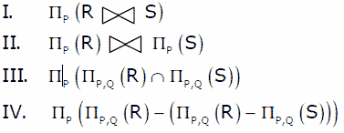
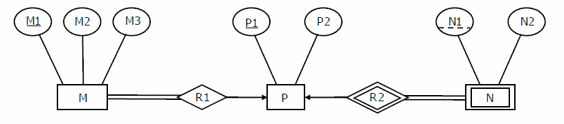

Following questions have been asked in GATE 2008 CS exam.
1) Let R and S be two relations with the following schema
R (P,Q,R1,R2,R3)
S (P,Q,S1,S2)
Where {P, Q} is the key for both schemas. Which of the following queries are equivalent?

(A) Only I and II
(B) Only I and III
(C) Only I, II and III
(D) Only I, III and IV
{kind=link}
Answer (D)
In I, Ps from natural join of R and S are selected.
In III, all Ps from intersection of (P, Q) pairs present in R and S.
IV is also equivalent to III because (R – (R – S)) = R ∩ S.
II is not equivalent as it may also include Ps where Qs are not same in R and S.
2) Consider the following ER diagram.

{kind=link}
The minimum number of tables needed to represent M, N, P, R1, R2 is
(A) 2
(B) 3
(C) 4
(D) 5
Answer (B)
See http://geeksquiz.com/gate-gate-cs-2008-question-82/ for explanation.
3) Which of the following is a correct attribute set for one of the tables for the correct answer to the above question?
(A) {M1, M2, M3, P1}
(B) {M1, P1, N1, N2}
(C) {M1, P1, N1}
(D) {M1, P1}
Answer (A)
4) Consider the following relational schemes for a library database:
Book (Title, Author, Catalog_no, Publisher, Year, Price)
Collection (Title, Author, Catalog_no)
with in the following functional dependencies:
I. Title Author --> Catalog_no II. Catalog_no --> Title Author Publisher Year III. Publisher Title Year --> Price
Assume {Author, Title} is the key for both schemes. Which of the following statements is true?
(A) Both Book and Collection are in BCNF
(B) Both Book and Collection are in 3NF only
(C) Book is in 2NF and Collection is in 3NF
(D) Both Book and Collection are in 2NF only
Answer (C)
Table Collection is in BCNF as there is only one functional dependency “Title Author –> Catalog_no” and {Author, Title} is key for collection. Book is not in BCNF because Catalog_no is not a key and there is a functional dependency “Catalog_no –> Title Author Publisher Year”. Book is not in 3NF because non-prime attributes (Publisher Year) are transitively dependent on key [Title, Author]. Book is in 2NF because every non-prime attribute of the table is either dependent on the key [Title, Author], or on another non prime attribute.
Please see GATE Corner for all previous year paper/solutions/explanations, syllabus, important dates, notes, etc.